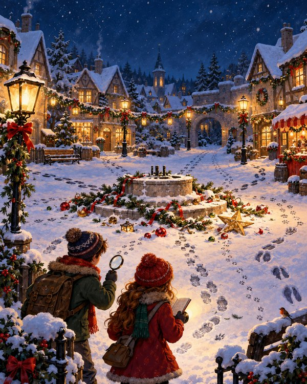

Праздники и добрые вечера без долгой подготовки
Готовые квесты на день рождения и Новый год. И сказки с играми на каждый вечер. Всё в одном файле: задания, ответы и подсказки для взрослого.
- Файл сразу после оплаты
- Печать на обычном принтере
- Ответы для взрослого
Что вы ищете?
Два раздела: для праздника и для обычного вечера.
Сколько лет ребёнку?
Нажмите на возраст — покажем подходящие квесты.
Какой у вас праздник?
Выберите повод — покажем подходящие квесты.
Популярные квесты
На день рождения и на Новый год, для малышей и школьников.
Тайна волшебного яйца: квест для малышей
Шесть станций по картинкам, кристаллы на постере и настоящее чудо в финале: под краской проявляется дракончик. Читать не нужно.
 День рождения
День рожденияПиратский клад
Капитан Шкипер спрятал клад ко дню рождения. Команда проходит 9 морских испытаний и открывает сундук.
 Для девочек
Для девочекШкола волшебниц: тайна Лунной книги
Девять волшебных уроков по дому: руны, зелья, звёздная карта, шифр и судоку. Печати с буквами складываются в заклинание, которое открывает Лунную книгу с подарком.
 Новый год
Новый годГде Дед Мороз спрятал подарок
Дед Мороз оставил 9 зимних подсказок. Снеговичок Снежок помогает детям найти подарки под ёлкой.

Новый годКто украл ёлку? Новогодний детектив
Новогодний детектив: восемь дел с шифрами, пять подозреваемых, улики и алиби. Дети вычисляют, кто увёз ёлку — и узнают, зачем.
Протокол «Полночь»: побег из лаборатории
Квест-комната дома для подростков: 60 минут на таймере, два отсека, семь настоящих головоломок и код выхода. Взрослый играет роль искусственного интеллекта.
Светлячок Лучик ищет дорогу домой
Сказка с продолжением на 30 вечеров для малыша 3–4 года. Каждый вечер — глава и пять коротких игр. Готовить ничего не нужно.
- 15–20 минут вдвоём
- Игры из того, что есть дома
- Добрые слова, дружба, чувства, смелость
- Карта огоньков и диплом
Как проходит праздник
- 01Получите файл
Ссылка на PDF приходит на почту сразу после оплаты.
- 02Распечатайте
Подойдёт обычный домашний принтер, даже чёрно-белый.
- 03Спрячьте карточки
По готовой таблице: что куда положить. Подготовка — около 15 минут.
- 04Вручите первое письмо
Дальше дети идут по подсказкам, а вы наблюдаете и помогаете.
Что внутри каждого квеста
Всё, чтобы провести игру без импровизации в последний момент.
- Письмо-завязкаОт героя истории — с него начинается игра
- Карточки-заданияЗагадки, шифры и задания на внимательность
- Таблица тайниковКакую карточку куда спрятать
- Ответы и подсказкиЕсли ребёнок застрял
- Инструкция взросломуЧто подготовить и как начать
- ДипломНаграда в конце игры
Идеи для праздника
Как провести квест дома и где спрятать подсказки.
Квест для поиска подарка мужу или парню: идеи заданий
Как устроить квест по поиску подарка для мужа или парня: 10 идей заданий по квартире, личные вопросы, шифры и финал. На день рождения, 23 февраля, годовщину и Новый год.
Квест для поиска подарка ребёнку в квартире: задания и загадки
Готовый план квеста для поиска подарка в квартире: 12 загадок про тайники, задания по возрасту и схема, как всё разложить за 15 минут. Подойдёт на день рождения и Новый год.
Как необычно подарить подарок ребёнку: 7 идей без лишних трат
Семь способов вручить подарок ребёнку так, чтобы он запомнил: квест по дому, карта сокровищ, письмо от героя, следы на полу и другие идеи для дня рождения и Нового года.
Частые вопросы
Нужен ли цветной принтер?
Нет. Все задания решаются и в чёрно-белой печати: ответы не зависят от цвета.
Как я получу файл?
Сразу после оплаты на вашу почту придёт письмо со ссылкой на PDF. Если письма нет, проверьте папку «Спам» или напишите нам.
Что, если дома нет нужного тайника?
В каждом квесте есть запасной вариант: «станция» — лист с названием предмета на коробке. Можно и вовсе не прятать карточки, а выдавать их по очереди за столом.
Можно играть компанией?
Да. В описании каждого квеста указано, на сколько детей он рассчитан. В инструкции есть советы, как дать роль каждому.
Сколько времени занимает подготовка?
Около 15–20 минут: распечатать, разрезать по пунктиру и разложить карточки по таблице.
Можно ли использовать квест несколько раз?
Да, файл остаётся у вас. Распечатайте его снова для другого праздника. Передавать и перепродавать файл нельзя.